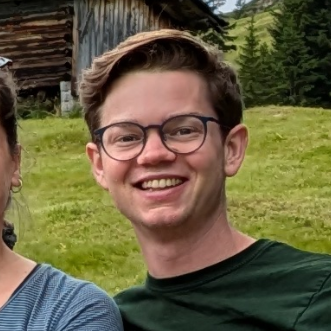

Rasmus Haugaard
raha@raha.dk raha.dk scholar.raha.dk
Profile
PhD and former Assistant Professor with work at the intersection of Computer Vision, Deep Learning and Robotics with a focus on modeling robot-vision problems as well-posed learning problems towards more reliable robot systems. First-author publications in top-tier venues (CVPR, ICCVW, CORL, ICRA, IROS).
Experience
2023 - 2025
Assistant Professor / Postdoctoral Researcher, SDU Robotics
- Research on pose estimation from tactile feedback for easy robot cell fixture calibration with uncertainty quantification
- Worked on an autonomous learning pipeline for trash sorting
- Applied methods developed during the PhD in internal projects
- Taught software development and deep learning courses
- Supervised bachelor/master projects and other student projects
2019 - 2023
Ph.D. in Object Pose Estimation, SDU Robotics
- Research on object pose estimation, including pose estimation from correspondence distributions, extending that approach to multi-view, and estimating pose distributions - an expressive pose knowledge representation which integrates well with probabilistic frameworks and sensor-fusion
- Research on visual servoing for peg-in-hole, screw- and pcb component insertion, including a sim2real- and an autonomous data collection pipeline
- CV and autonomous cable management for the 2021 IROS challenge
- Assisted teaching numerical methods & deep learning
- Change of environment at the Technical University of Denmark (DTU)
2015 - 2021
BSc & MSc in Engineering (Robot Systems), SDU
- Master project (2021) on establishing multiple correspondences in face of ambiguities for object pose estimation
- Bachelor project (2018) on training object detectors from synthetic data
- Exchange at Norwegian University of Science and Technology (NTNU)
- Extracurricular course in entrepreneurship
Skills
- Domains: Robotics, Computer Vision, Deep Learning, Probabilistic Modeling
- Languages: Python, C/C++, Assembly, Rust, html/css/javascript
- Frameworks & Libraries: PyTorch, OpenCV, NumPy, Matplotlib, SciPy, ROS, OpenGL
- Platforms & Tools: Linux, Git, Docker, uv, UR Robots, Blender
- Professional Skills: Supervision, Public Speaking, Scientific Writing, Teaching